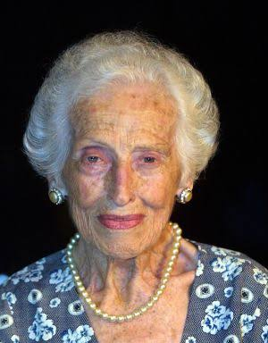

Helena Kolody

Biografia
Helena kolody nasceu em 12 de outubro de 1912 na cidade de Cruz Machado, Paraná, e faleceu em 15 de fevereiro de 2004 em Curitiba. Seus pais, Miguel e Victoria Kolody, eram imigrantes ucranianos que se estabeleceram no Brasil e fundaram, em Curitiba, a "Prosvita", primeira sociedade ucraniana do país. Desde jovem, Helena já escrevia versos e poemas; em 1928, aos 16 anos, publicou sua primeira obra, "A Lágrima", na revista O Garoto.
Em 1931, Helena Kolody foi contratada pelo Grupo Escolar Barão de Antonina, em Rio Negro. Logo depois, passou a lecionar na Escola Normal de Ponta Grossa e, a partir de 1937, foi chamada para atuar no Instituto de Educação de Curitiba (antiga Escola Normal), onde permaneceu por 23 anos. Em 1944, trabalhou por alguns anos em Jacarezinho e, posteriormente, retornou a Curitiba.
Helena é considerada uma das maiores poetisas do Paraná e do Brasil, sendo uma referência nacional e internacional. Ao longo de sua vida, publicou 22 livros, recebeu diversos prêmios, homenagens e ocupou a cadeira n.º 28 da Academia Paranaense de Letras de 1991 a 2004. Em 2011, foi condecorada pelo Ministério da Cultura com a Ordem do Mérito Cultural – Classe Grã-Cruz, a mais alta honraria da cultura brasileira.
Principais Obras
 Paisagem Interior (1941)
Paisagem Interior (1941)
 A Sombra no Rio (1951)
A Sombra no Rio (1951)
 Sempre Palavra (1985)
Sempre Palavra (1985)
Literatura
A obra apresenta aspectos existenciais mais reservados, sem vaidades e mundanidades, carregando muita originalidade e presença. As suas palavras funcionam quase como uma epifania, cheia de sentimentos e memórias antigas de seu passado. O espaço inserido e seu cotidiano é bem caracteristico de sua escrita. Além disso, é possível imaginar o que Helena estava pensando enquanto escrevia, criando uma “palavra-imagem”, mas não só daquilo que vemos, mais do que temos medo.
Premiações
- 1942 – 2º lugar no concurso de poesia da Sociedade de Cultura.
- 1949 – 3º lugar no Concurso de Livros do Centro de Letras do Paraná.
- 1977 – Troféu Bento Munhoz da Rocha Netto – Personalidade do Ano.
- 1987 – Título de Cidadã Honorária de Curitiba.
- 1988 – Homenagem relacionada à obra Viagem no Espelho .
- 2002 – Homenagem da Associação de Mulheres de Negócios e Profissionais.
- 2011 – Ordem do Mérito Cultural – Classe Grã-Cruz.
Complemento
Para conhecer mais sobre o autor e suas obras, consulte fontes bibliográficas confiáveis.
Helena Kolody - Site Oficial